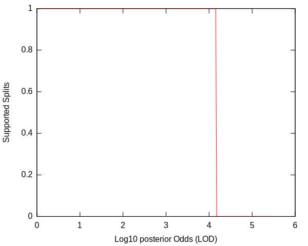
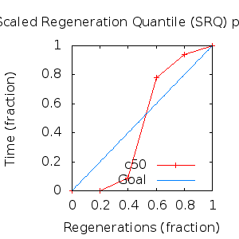
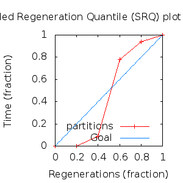

MCMC Post-hoc Analysis: 4 sequences
Data & Model
| Partition | Sequences | Lengths | Alphabet | Substitution Model | Indel Model | Scale Model |
|---|
| 1 |
E5_alpha2_aa_reduced.fas |
74 - 84 |
Amino-Acids | S1 = lg08+f |
I1 = rs07 |
scale1 ~ gamma[0.5,2] |
Scalar variables
| Statistic | Median | 95% BCI | ACT | ESS | burnin | PSRF-CI80% | PSRF-RCF |
|---|
| prior |
-80.22 |
(-102.4, -61.76) |
18.02 |
14984 |
293
|
0.9998 | 1.001
|
| prior_A1 |
-55.14 |
(-76.94, -41.68) |
3.139 |
86025 |
183
|
1 | 0.9973
|
| likelihood |
-620.9 |
(-632.9, -608.4) |
4.996 |
54045 |
138
|
0.9998 | 0.9972
|
| posterior |
-701.2 |
(-720.2, -685.5) |
23.3 |
11588 |
687
|
1 | 0.9998
|
| Heat.beta |
1 |
| | | | | |
| Scale[1] |
2.016 |
(0.575, 4.809) |
1.058 |
255249 |
80
|
1 | 0.9998
|
| f:pi[A] |
0.04571 |
(0.02044, 0.07595) |
7.904 |
34159 |
444
|
1 | 0.9972
|
| f:pi[R] |
0.02272 |
(0.004382, 0.0486) |
8.781 |
30747 |
386
|
1 | 1
|
| f:pi[N] |
0.02018 |
(0.003771, 0.04346) |
8.899 |
30341 |
274
|
0.9999 | 1.003
|
| f:pi[D] |
0.0206 |
(0.002358, 0.04832) |
9.421 |
28659 |
451
|
0.9995 | 0.9993
|
| f:pi[C] |
0.05524 |
(0.02757, 0.08816) |
8.07 |
33455 |
295
|
0.9996 | 0.995
|
| f:pi[Q] |
0.0283 |
(0.007357, 0.0561) |
10.45 |
25847 |
406
|
0.9999 | 1.005
|
| f:pi[E] |
0.01129 |
(0.0003451, 0.03217) |
10.36 |
26053 |
500
|
1 | 0.998
|
| f:pi[G] |
0.01787 |
(0.002122, 0.04195) |
9.387 |
28764 |
323
|
0.9998 | 0.994
|
| f:pi[H] |
0.01946 |
(0.004309, 0.04163) |
8.839 |
30545 |
437
|
1 | 0.9982
|
| f:pi[I] |
0.119 |
(0.08171, 0.1594) |
8.224 |
32832 |
138
|
1 | 1
|
| f:pi[L] |
0.1699 |
(0.1216, 0.2204) |
7.477 |
36112 |
291
|
0.9998 | 0.9962
|
| f:pi[K] |
0.01027 |
(0.0002875, 0.0288) |
9.849 |
27413 |
289
|
0.9998 | 1.001
|
| f:pi[M] |
0.0166 |
(0.004361, 0.03307) |
9.019 |
29937 |
269
|
0.9999 | 0.9942
|
| f:pi[F] |
0.0694 |
(0.04063, 0.1033) |
7.74 |
34883 |
306
|
1 | 0.998
|
| f:pi[P] |
0.031 |
(0.007964, 0.06134) |
8.54 |
31615 |
377
|
1.001 | 0.9975
|
| f:pi[S] |
0.07101 |
(0.03808, 0.1097) |
7.914 |
34117 |
310
|
1 | 0.9975
|
| f:pi[T] |
0.06921 |
(0.03832, 0.104) |
7.782 |
34694 |
354
|
1 | 0.9906
|
| f:pi[W] |
0.01416 |
(0.001665, 0.03398) |
9.419 |
28664 |
293
|
1 | 1.006
|
| f:pi[Y] |
0.03378 |
(0.0133, 0.05967) |
8.158 |
33098 |
714
|
0.9999 | 1.001
|
| f:pi[V] |
0.1229 |
(0.08326, 0.1646) |
7.975 |
33855 |
449
|
1 | 0.999
|
| rs07:mean_length |
3.137 |
(1.488, 6.284) |
2.667 |
101219 |
110
|
1 | 0.9996
|
| rs07:log_rate |
-3.894 |
(-4.633, -3.095) |
2.209 |
122224 |
266
|
0.9999 | 0.998
|
| |A1| |
89 |
(86, 94) |
1.784 |
151381 |
34 |
0.8571 | 0.9994
|
| #indels1 |
8 |
(5, 11) |
3.201 |
84345 |
37 |
0.75 | 0.9997
|
| |indels1| |
21 |
(14, 32) |
2.303 |
117230 |
44 |
0.9231 | 0.9982
|
| #substs1 |
104 |
(97, 108) |
2.516 |
107315 |
72 |
0.875 | 0.9982
|
| Scale1*|T| |
2.298 |
(1.728, 2.956) |
3.081 |
87644 |
212
|
1 | 0.9985
|
| |A| |
89 |
(86, 94) |
1.784 |
151381 |
34 |
0.8571 | 0.9994
|
| #indels |
8 |
(5, 11) |
3.201 |
84345 |
37 |
0.75 | 0.9997
|
| |indels| |
21 |
(14, 32) |
2.303 |
117230 |
44 |
0.9231 | 0.9982
|
| #substs |
104 |
(97, 108) |
2.516 |
107315 |
72 |
0.875 | 0.9982
|
| |T| |
1.145 |
(0.2962, 2.486) |
1 |
270003 |
81
|
0.9998 | 0.999
|
Phylogeny Distribution


Alignment Distribution
Partition 1
|
|
|
Diff |
|
Min. %identity |
# Sites |
Constant |
Informative |
| Initial |
FASTA |
HTML |
Diff |
|
9.52% |
84 |
2 (2.38%) |
13 (15.5%) |
| Best (WPD) |
FASTA |
HTML |
|
AU |
22.5% |
89 |
15 (16.9%) |
17 (19.1%) |
Mixing
Statistics: | scalar burnin | 714 | | scalar ESS | 1.159e+04 | | topological ESS | | | ASDSF | NA | | MSDSF | NA | | PSRF CI80% | 1.001 | | PSRF RCF | 1.006 |
|  |
Analysis
directory: /work/awillemsen/bali-phy/AlphaPVs_E5_aa_new_reduced
version: 3.3
| chain # | burnin | subsample | Iterations (after burnin) | command line | subdirectory |
|---|
| 1 |
10000 |
1 |
90000 |
bali-phy E5_alpha2_aa_reduced.fas -s 96239 --smodel lg08 -i 100000 -n AlphaPVs_E5_red_alpha2 |
AlphaPVs_E5_red_alpha2-1 |
| 2 |
10000 |
1 |
90000 |
bali-phy E5_alpha2_aa_reduced.fas -s 43987 --smodel lg08 -i 100000 -n AlphaPVs_E5_red_alpha2 |
AlphaPVs_E5_red_alpha2-2 |
| 3 |
10000 |
1 |
90000 |
bali-phy E5_alpha2_aa_reduced.fas -s 28343 --smodel lg08 -i 100000 -n AlphaPVs_E5_red_alpha2 |
AlphaPVs_E5_red_alpha2-3 |
| P(data|M) = -631.298 +- 0.100
|
Complete sample: 3
topologies |
95% Bayesian credible interval: 1 topologies |
Model and priors
Tree (+priors)
| topology | ~ uniform on tree topologies |
| branch lengths | ~ iid[num_branches[T],gamma[0.5,div[2,num_branches[T]]]] |
Substitution model (+priors)
| S1 | = |
lg08+f
| f:pi | ~ | dirichlet_on[letters[@a],1]
|
|
Indel model (+priors)
| I1 | = |
rs07
| rs07:log_rate | ~ | laplace[-4,0.707]
|
| rs07:mean_length | ~ | exponential[10,1]
|
|
Scales (+priors)
{kind=link}
{kind=link}
{kind=link}
{kind=link}
{kind=link}
{kind=link}
{kind=link}
{kind=link}